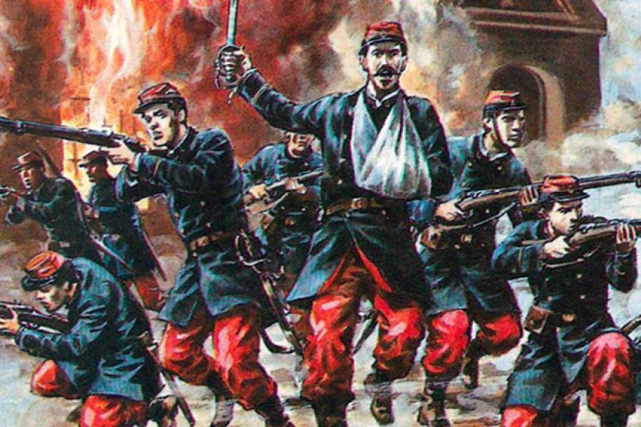
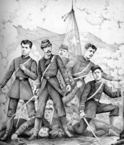
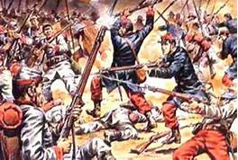
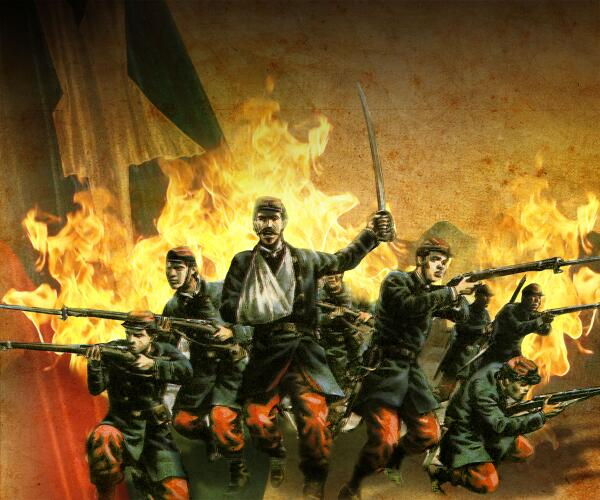

Combate de la Concepción
 En plena Campaña de la Sierra en la Guerra del Pacífico, 77 chilenos defendían a muerte la plaza de La Concepción, en una emblemática lucha sinónimo de valentía y sacrificio, hito clave en la historia nacional que hoy se conmemora con el Juramento a la Bandera. Las fuerzas aliadas, al mando del coronel Juan Gastó, atacaron a la compañía chilena que cubría el poblado de La Concepción, compuesta por hombres del Regimiento 6° de línea al mando del capitán Ignacio Carrera Pinto. Tras el sangriento combate, todos los chilenos resultaron muertos, negándose los sucesivos mandos a aceptar las ofertas de rendición a pesar de la tremenda desproporción de fuerzas, por cuanto la columna peruana estaba reforzada por más de 1.500 indios montoneros. Esta heroica hazaña llevó al Comandante de la División a dar a conocer a las tropas el 14 de julio la siguiente proclama: “¡Soldados del Ejército del centro! Al pasar por el pueblo de La Concepción, habéis presenciado el lúgubre cuadro de escombros humeantes, cuyo combustible eran los restos queridos de cuatro oficiales y setenta y tres individuos de tropa del Batallón Chacabuco 6ª de línea. Millares de manos salvajes fueron los autores de tamaño crimen; pero es necesario que tengáis entendido que los que defendían el puesto que se les había confiado eran chilenos que, fieles al cariño de su patria y animados por el entusiasmo de defender su bandera, prefirieron sucumbir antes que rendirse!. ¡Un hurra a la eterna memoria de los héroes de La Concepción!”.
Tiempo de duracion de el combate
 La batalla prácticamente concluyó cerca de las 9 de la mañana del lunes 10 de julio. Es decir, solo dos horas antes de la llegada de la división completa del coronel Del Canto, camino a retirarse hacia Lima. Con un día de retraso, debido al mencionado ataque de Cáceres en Marcavalle y Pucará. Se desarrolló el domingo 9 y el lunes 10 de julio de 1882 entre tropas chilenas y peruanas, estas últimas apoyadas por milicianos, en la localidad de Concepción, capital de la provincia homónima en el departamento de Junín, a 22 km de la ciudad de Huancayo, en los Andes centrales de Perú.
Primer Ataque
Asistió al almuerzo que finalizó violentamente y el estampido de un disparo activó su plan defensivo en la plaza. Los habitantes de Concepción empezaron a salir del pueblo a resguardarse porque el combate podía extenderse a todo el poblado. Carrera Pinto no podía abandonar Concepción, la superioridad numérica de los peruanos le era desfavorable, y tendría que defenderse hasta la llegada de Del Canto. Envió a un cabo y dos soldados hacia Huancayo para avisar de su situación.Las fuerzas peruanas empezaron a bajar de las alturas en dirección a la plaza. Los guerrilleros de Salazar por el sur desde el cerro El León y los soldados de Gastó por el norte desde el cerro Piedra Parada, cercando el pueblo, asaltando la plaza y atacando las posiciones chilenas. Las fuerzas chilenas mezclaron ataques a la bayoneta con fuego de sus fusiles,6 los que generaban bajas en las guerrillas que no contaban con armas de fuego sino con rejones. El ataque peruano continuaba, incluyendo francotiradores en los techos y ventanas, hasta que los chilenos retrocedieron hacia el centro de la plaza donde, por ser una posición muy expuesta, se replegaron ordenadamente al cuartel que tapiaron con muebles.Allí los soldados ocuparon posiciones defensivas, incluidos los heridos. En la oscuridad de la noche, las fuerzas chilenas intentaron salir hacia Huancayo, pero no lo lograron y volvieron al cuartel.
Segundo Ataque
Se sumaron al ataque de Salazar once pobladores de Concepción con sus respectivos rifles,
como el doctor Santiago Manrique Tello. Salazar ordenó a Pablo Bellido y Cipriano Camacachi rociar
con combustible los techos del convento para obligar a salir a los chilenos, quienes respondían desde
las ventanas del edificio. Así el mando recayó en el subteniente Julio Montt Salamanca.
Los guerrilleros de Salazar ocuparon los techos y las paredes atacando a los chilenos en
su última posición, quedando apenas 9 al mando del subteniente Luis Cruz Martínez y las cantineras.
Los guerrilleros empezaron a abrir forados en el local que defendía Cruz Martínez.
Dado que no hubo sobrevivientes chilenos,3 no existen testigos de esa nacionalidad.
Sin embargo, las fuentes chilenas, sobre la base de lo contado por dos testigos extranjeros14
a Del Canto cuando llegó al pueblo, indican que el subteniente Cruz Martínez, mediante el grito
«¡Los chilenos no se rinden. !», junto a cuatro soldados sobrevivientes cargaron a la bayoneta
y fueron muertos al salir por las fuerzas de Salazar.